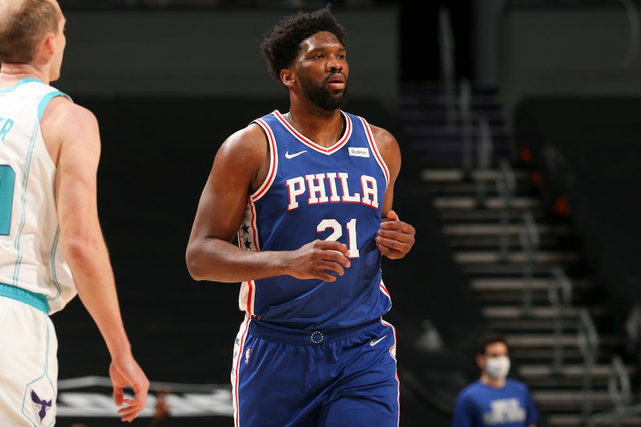
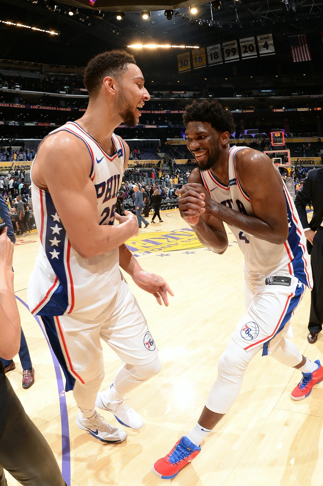

| HOME | TEAMS | NEWS | GAMES | SOBRE |
|
NBA NEWS
|
|||||||||
|  | |||||||||
|
EMBIID E SIMMONS SÃO ISOLADOS E ESTÃO FORA DO ALL-STAR POR PROTOCOLO DE COVID-19 |
|||||||||
|
Em versão reduzida, o All-Star deste domingo terá duas baixas importantes. Companheiros de
Philadelphia 76ers, Joel Embiid e Ben Simmons foram isolados depois de terem contato com um
indivíduo que testou positivo para a Covid-19. Segundo a ESPN americana, o contato com o
infectado teria acontecido em uma barbearia na Filadélfia.
|
|||||||||
|
|||||||||
|
Joel Embiid seria titular no quinteto de Kevin Durant, enquanto Simmons era um dos suplentes
do time de LeBron James. A NBA anunciou que Zion Williamson vai ser o substituto do jogador
camaronês.

|
|||||||||
| Referência: https://globoesporte.globo.com/basquete/nba/noticia/embiid-e-simmons-sao-isolados-e-estao-fora-do-all-star-por-protocolo-de-covid-19.ghtml | |||||||||